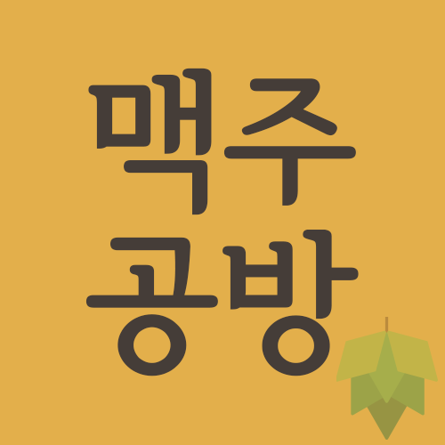
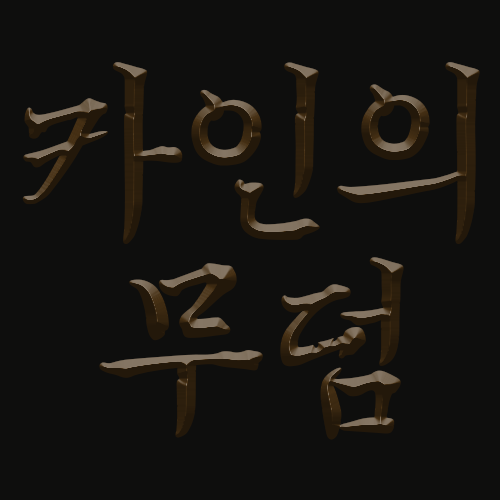

성형수술은 의사와의 상담으로부터 시작되는데 수술 이후의 모습을 시뮬레이션하여 수술에 대한 이해와 결정을 돕는다. 이러한 수술 시뮬레이션은 의사의 메모나 그리기 능력에 의존하지만 비너스는 환자의 3D 스캔 이미지를 이용해 사실적으로 시뮬레이션함으로써 수술 후 모습을 수술 결정 전에 확인해 볼 수 있도록 해주는 모바일 어플리케이션이다.

Multimedia Design맥주공방
수제 맥주를 찾는 비율은 높아졌다. 맥주를 우리가 직
접 만들어서 마시면 어떨까 하는 호기심에 시작 되었
으며 단순히 맥주를 마시는 것만이 아닌 만들고 즐기며
사람들과 어울릴 수 있는 공간을 만들고자 했다.

Moving Image Animation카인의 무덤
나는 많은 게임을 즐겨 했다. 내가 경험해 본 수많은 게임들 중 어릴 적 처음으로 사실적인 그래픽으로 신선했던 '카발 온라인'이라는 게임 속에 있는 카인의 무덤을 다르게 새롭게 재구성해 보았다.